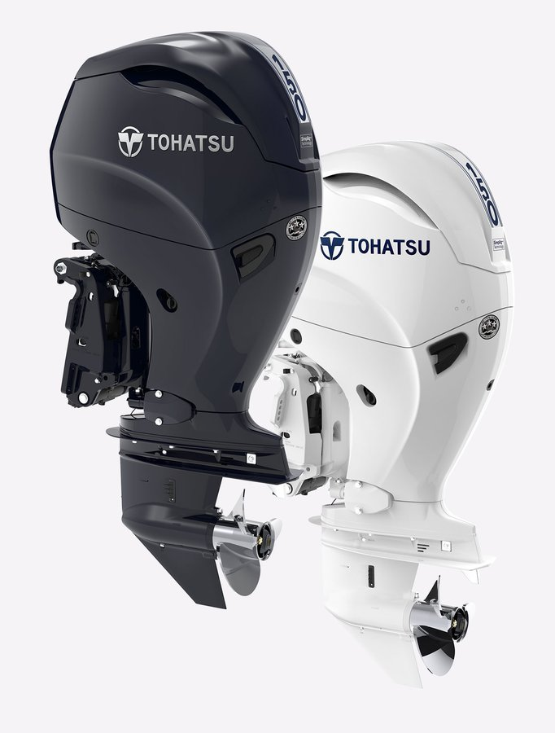
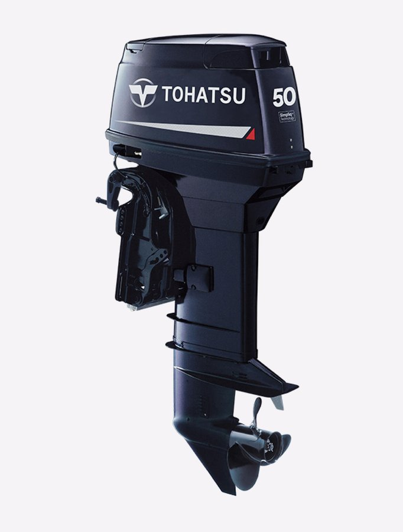
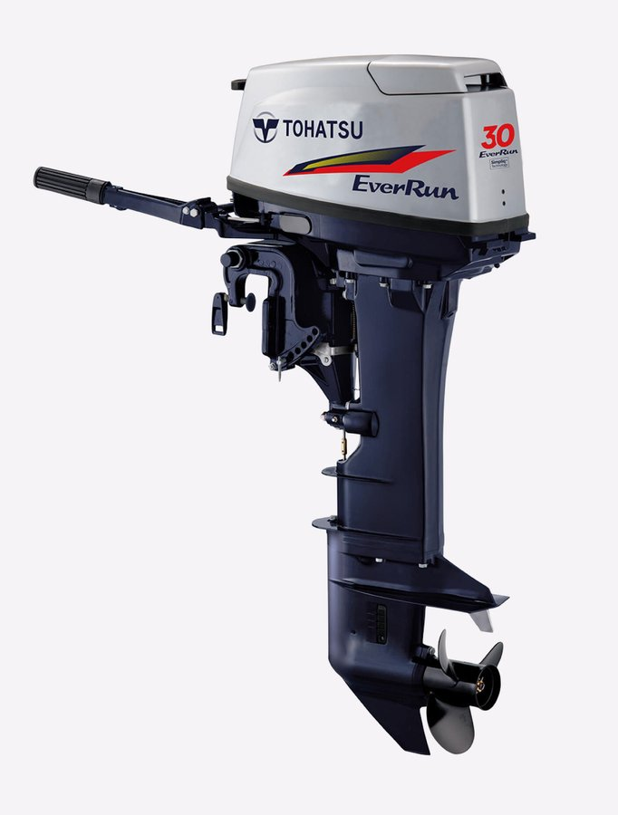

TOHATSU 主力产品线，以燃油经济、低噪音、低排放著称。高马力机型配备电子燃油喷射(EFI),启动顺畅、加速平稳。覆盖 2.5HP 至 150HP 全马力段，是渔政巡逻、水利执法、商务运输及休闲娱乐适用范围最广的系列。

经典二冲程系列，结构简单、动力强劲、维护便捷。重量轻、保养成本低，在各种作业环境下表现稳定可靠，是追求高性价比与轻量化用户的理想之选。覆盖 3.5HP 至 50HP。

搭载 TOHATSU Simpliq 技术的新一代二冲程系列，在保留二冲程强劲动力与轻量优势的同时，显著提升燃油效率、降低油烟与气味，带来更顺畅的操控体验。覆盖 15HP 至 50HP。
